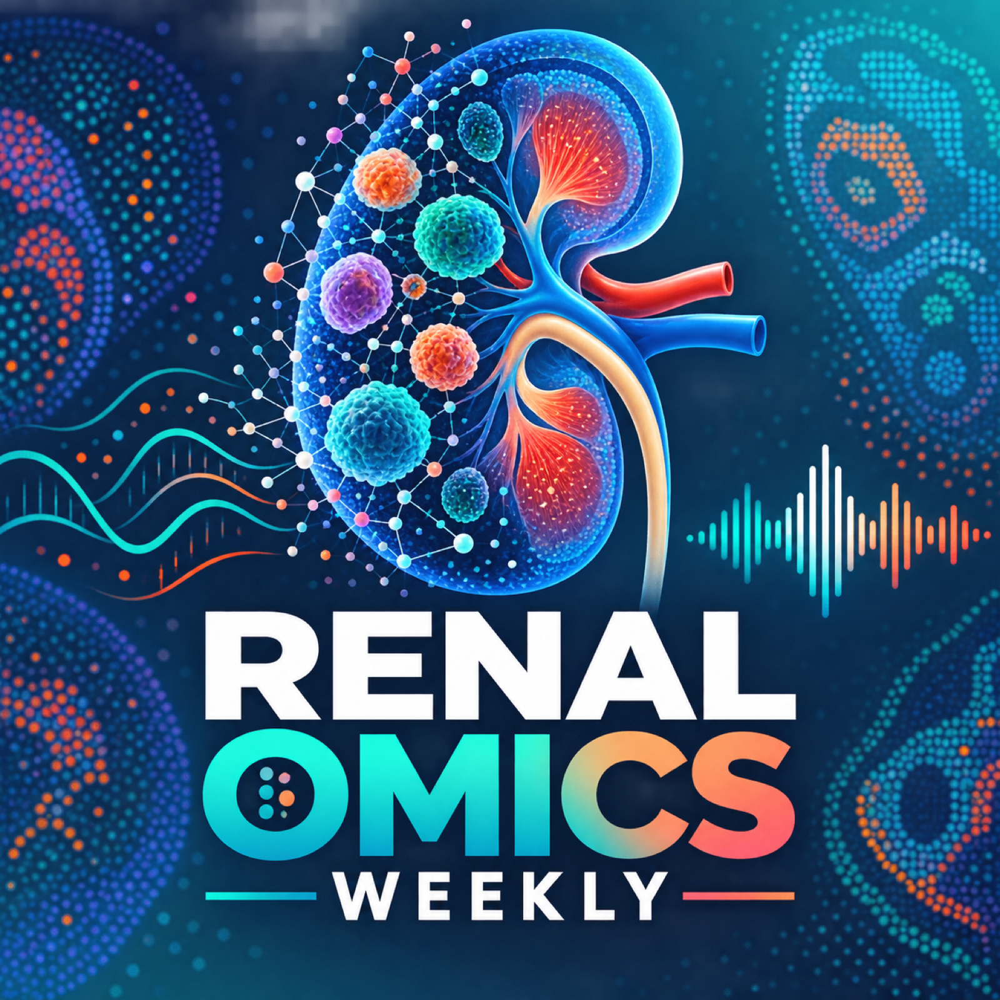

Renal Omics Weekly
New kidney, cardio-renal, spatial and single-cell research — plus one field-defining classic.
RSS feedThe first episode is being prepared.

New kidney, cardio-renal, spatial and single-cell research — plus one field-defining classic.
RSS feedThe first episode is being prepared.